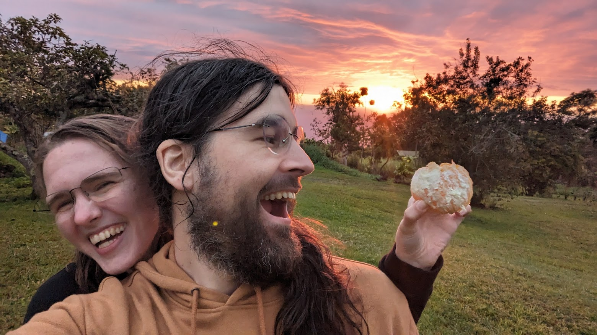
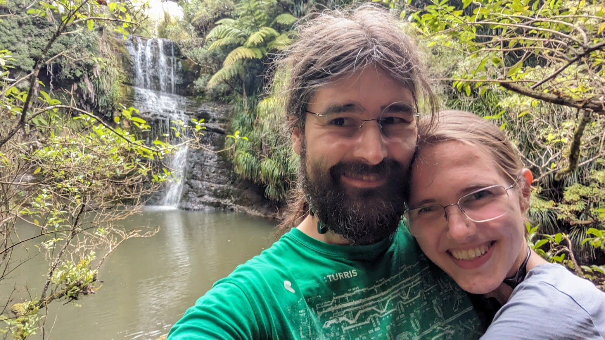
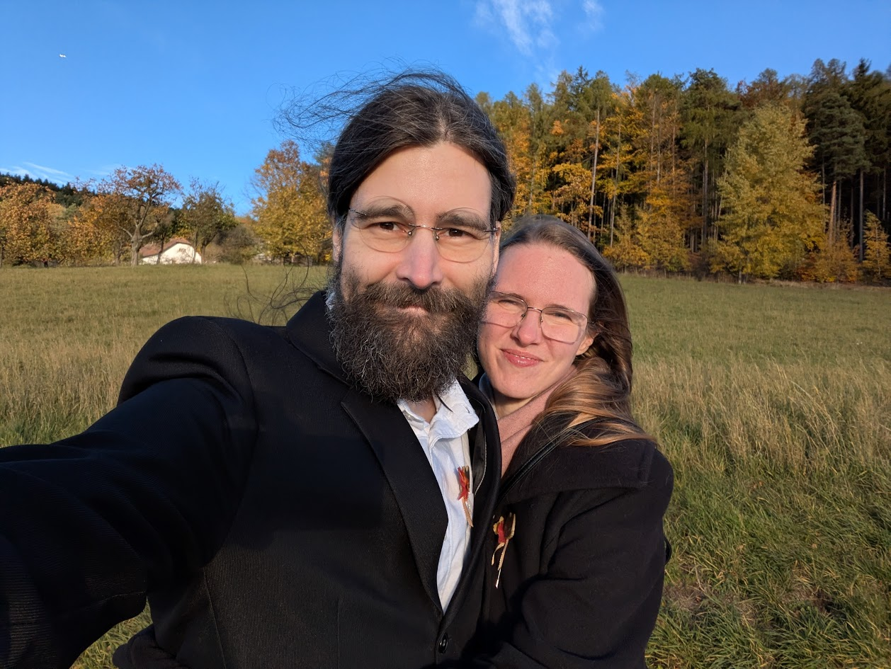
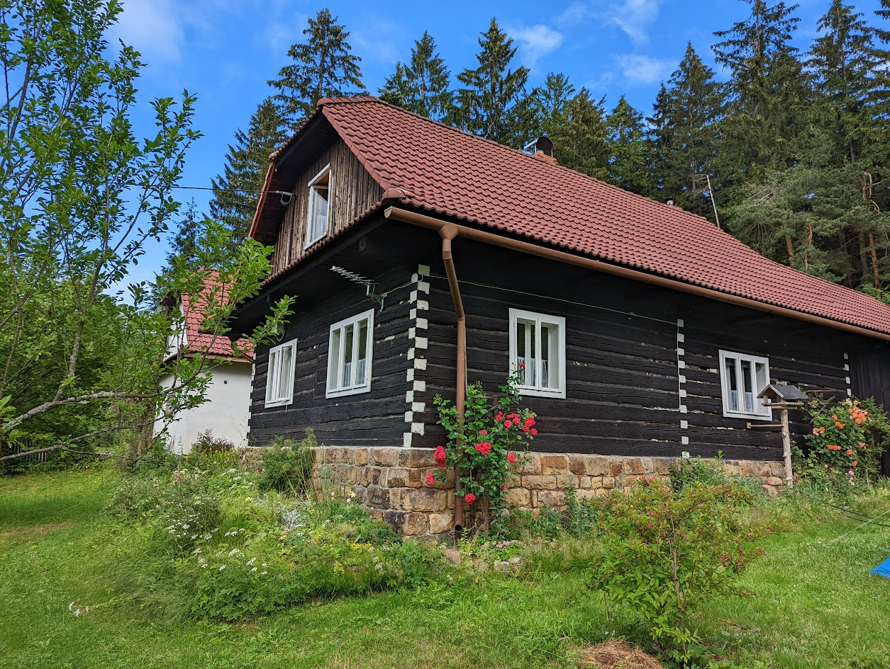
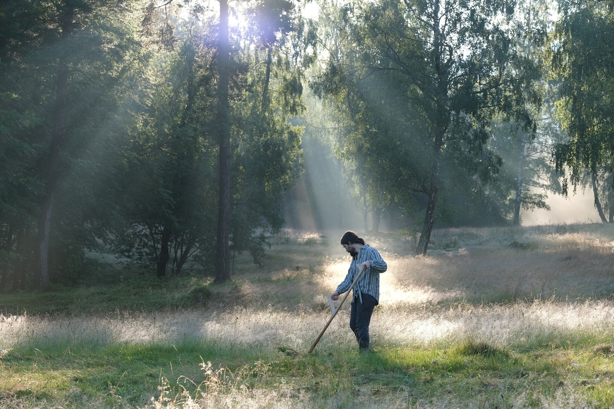

Zveme vás na naši svatbu
You are invited to our wedding



Po třech letech zásnub, mnoha předsvatebních cestách a dobrodružstvích plánujeme oslavit naši svatbu s přáteli a rodinou. Budeme rádi, pokud svatební den oslavíte s námi.
After three years of engagement, many pre-wedding trips and adventures, we are planning to celebrate our wedding with friends and family. We would love for you to celebrate this day with us.
Svatební rituál, program a hostina se odehrají na louce a v sadu okolo naší oblíbené roubenky v srdci Beskyd. Jste vítáni přidat se na jakoukoliv část.
The ceremony, programme and feast will take place on the meadow and in the orchard around our beloved log cabin in the heart of the Beskydy mountains in Czechia. You are welcome to join any part of it.

Celý program proběhne v okolí chaloupky, tedy hlavně v sadu, v zahradních stanech a též ve stodole či na zateplené půdě. Budeme především venku, ale připravíme se i na nepřízeň počasí.
Na chaloupce je elektřina a výtečná pitná voda. Kromě suchých záchodů budou k dispozici toitoiky. Samotná chaloupka bude poskytovat primárně zázemí organizačnímu týmu.
Pokud budete potřebovat s něčím pomoci nebo chcete zjistit, jestli to půjde zařídit, napište nám.
The entire programme will take place around the cabin — mainly in the orchard, garden marquees, barn and insulated loft. We will be mostly outside, but we will prepare for bad weather too.
The cabin has electricity and excellent drinking water. In addition to dry toilets, portable toilets will be available. The cabin itself will primarily serve as a base for the organising team.
If you need help with anything or want to find out if something can be arranged, just let us know.
Na Horní Bečvě je k dispozici mnoho možností ubytování, jeho výběr necháme na vás. K chaloupce je to nejblíže od zastávek Horní Bečva – rest. Na Bečvici či Horní Bečva – Přehrada. Doporučujeme vybírat si ubytování v jejich blízkosti, jelikož budou pravděpodobně sloužit jako sběrné body.
There are many accommodation options in Horní Bečva — we leave the choice to you. The nearest stops to the cabin are Horní Bečva – rest. Na Bečvici or Horní Bečva – Přehrada. We recommend choosing accommodation nearby, as these stops will likely serve as gathering points.
V chaloupce je také možnost přespat ve spacáku na hezké zateplené půdě nebo ve stanu (máme i několik stanů k zapůjčení). Počítejte s tím, že chaloupka má omezené zázemí (např. bez sprch).
There is also the option to sleep at the cabin — in a sleeping bag in the lovely insulated loft or in a tent (we also have several tents to lend). Bear in mind that the cabin has limited facilities (e.g. no showers).
Prosím, vyplňte nám co nejdřív tento dotazník, pomůže nám to s plánováním.
Please fill in the form as soon as possible — it helps us with planning.
Nic neočekáváme :) Pokud chcete, budeme rádi, když nám dáte pouze něco symbolického nebo přispějete na svatební cestu.
We expect nothing. If you'd like to give something, a small symbolic gift or a contribution to our honeymoon would make us very happy.
Svatba se uskuteční u roubenky na Horní Bečvě. Je to místo, které nás provází naším vztahem, Tomáš tam s přáteli kosí roky chráněnou orchidejovou louku a nachází se v Annině rodném Valašsku. Děkujeme našim přátelům Křivonožkovým, že zde můžeme oslavu uspořádat.
The wedding will take place at a log cabin in Horní Bečva. It is a place that has been part of our relationship — Tomáš has been mowing a protected orchid meadow there with friends for years, and it is located in Anna's home region of Wallachia. Thank you to our friends the Křivonožka family for letting us hold the celebration here.

Foto: Tomáš Štec
Photo: Tomáš Štec
Děkujeme Radimovi, Malunce a Romaně za pomoc s organizací.
A big thank you to Radim, Malunka and Romana for helping organise everything.
Pokud byste chtěli plánovat něco, o čem nemáme vědět, ozvěte se Radimovi: radim.pechal@gmail.com, 728 950 531. Radim bude také pomáhat s koordinací předem a na místě a můžete se mu ozvat i s logistickými dotazy.
If you would like to plan something we shouldn't know about, contact Radim at radim.pechal@gmail.com or +420 728 950 531. Radim will also be helping with coordination before and during the event, so feel free to reach out with any logistical questions too.